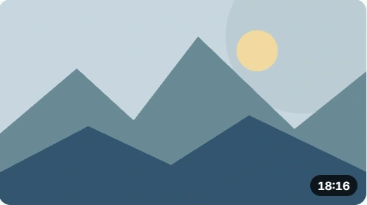

Ideas for a more thoughtful YouTube. Most would need YouTube itself to build and test them.
Community notes.
YouTube already offers notes on videos, but writing them is currently limited to eligible US-based users. We want to see the program expand: research on X suggests notes can reduce the spread of misleading posts.[1]PNAS · 2025Community notes reduce engagement with and diffusion of false information onlineThe study estimated 46.1% fewer reposts after a note appeared. Across posts’ full lifespans, the estimated reduction was 11.6%.Observational research on X, using synthetic controls. It did not test YouTube or correction notifications.Read the paper ↗ (opens in a new tab)
Notes can arrive after a claim has already spread.[2]Nature Communications · 2026Community-based fact-checking reduces the spread of misleading posts on X (formerly Twitter)Notes took a median 18.1 hours to appear. The study estimated 61.2% fewer reposts after notes appeared, but 14.9% fewer overall in its 36-hour analysis.Observational research on X. It did not test whether notifying earlier viewers changes their beliefs.Read the paper ↗ (opens in a new tab) When a new note appears, notify people who watched the video in the past two weeks so they can see the correction.
Total Solar Eclipse Caught on Camera Today!
Turn watching into doing.
Creators could suggest a meaningful next step alongside their video—something to try, a place to go or a cause to support.
Viewers could save it for later. Creators could learn which suggestions people choose, helping them make videos that inspire action beyond the screen.
YouTube uses watch time alongside other signals to help recommend videos. What if people could also recommend the videos that really stayed with them?
A few recommendations each week could help meaningful videos find an audience, giving viewers’ judgement more weight and helping counter clickbait.
YouTube Hype lets viewers boost recent videos from smaller creators. This proposal would extend that idea to all channels and videos, using viewers’ recommendations to help shape discovery across the platform.

How we brought a river back to life
The Valley Project
★ Recommended by viewers
How could YouTube work better for kids?
Building a video app for kids brings extra legal and privacy responsibilities, including how children’s data is handled. It also takes people and funding to review videos and respond to safety concerns over time. That work is beyond what our team can take on, so a kids’ version is outside Villow’s scope.
We think relying on parental monitoring and controls puts too much of the responsibility on families. The platform itself should help kids find something worthwhile to watch and give them a say in when it’s time to stop.
ClockwiseTV
ClockwiseTV is trying a different approach for kids aged 8–12. It describes a human-reviewed video library and sessions that kids and parents set together, with a clear stopping point built into the app.
We haven’t tried it ourselves. We think some of ClockwiseTV’s ideas could work alongside Villow’s, and we’re curious which combination would actually work for kids and families.
We think most uses of generative AI are likely to do more harm than good. We’re sceptical that YouTube is getting that balance right today.
With Villow, we’re exploring how to keep what makes social media worthwhile and reduce the harm it can cause. We’re taking the same approach to generative AI. We’ve come up with three ways it could genuinely help, and each would be optional.
Generate chapters for a video
Benefit.Chapters can make it easier to find a specific part of a video. Viewers could request chapters on a video that has none. The creator would see how many people asked and could write the chapters or use AI for a draft.
Our take.AI drafting should be off by default. The channel creator should decide when to generate a draft, be able to edit the titles and timestamps, and approve what goes live. A note below the chapter list would tell viewers when AI helped draft it.
Talk with AI about a video
Benefit.Ask questions, unpack an argument or explore sources with an AI that can refer to the video and its transcript. If a conversation raises a potentially misleading claim, it could prompt the viewer to consider a community note.
Concern.AI can sound confident while missing context or getting things wrong. A chat could also draw attention away from the video and discussion with other people.
Our take.Keep it optional, link answers to the video and sources, and make it easy to return to watching. A concern raised in chat should lead to checking the evidence before proposing a note.
AI for community notes
Why assistance matters.It isn’t realistic to expect viewers to research every video they watch. Finding sources, checking claims and writing a clear note takes time, and the work is voluntary. Notes also need reviewers with different perspectives to weigh in. That is a lot to ask without help.
How AI could help.AI could find relevant sources, help check claims against them and draft a sourced note. A video’s More menu could offer “Request AI fact-check,” focusing the work on videos viewers want checked.
Concern.AI can misread a claim or cite a source that does not support it. Requests would prioritise a check, not prove a video wrong.
Our take.Reduce the research burden while keeping people in charge of checking sources and deciding whether a note is helpful. Review from different perspectives would still be essential. X already accepts AI-written notes for human review.
Fight bots and fake comments.
Comments should be a place for people to talk to people. Fake accounts and coordinated bots can make it hard to know whom to trust, hollowing out that human connection.
YouTube prohibits fake engagement, but the wider problem needs more attention. Stopping abuse without wrongly labelling real people is difficult, and there must be ways to challenge mistakes.